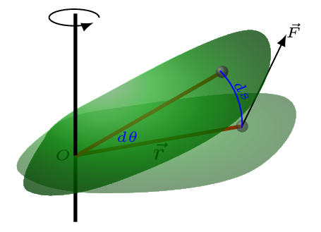
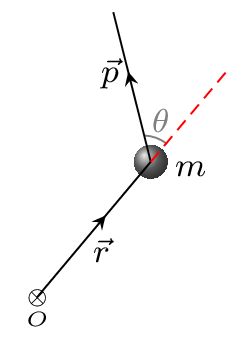

Section 7.3 Rotational Dynamics
Just as linear dynamics describes the influence of force on a body and its transalational motion, in rotational dynamics torque describes the nature of rotational motion. Torque in rotational motion is a linear analogue of force. Actually, torque is a turning effect of force which acts on a body in specific direction and at specific position.
\begin{equation*}
\sum F = ma,\quad \sum\Gamma = I \alpha,
\end{equation*}
\begin{equation*}
a = r\alpha,\quad \omega \neq0,\quad \alpha \neq0
\end{equation*}
A general expression for the angular acceleration produced by a torque is quite similar to acceleration produced by a force in linear motion. For example, if a force is applied at the center of mass it will not produce any torque. It seems that no torque no rotation and it is right but in this case we have to consider no net torque. If the net torque acting on a rigid object is zero, the body will rotate with a constant angular velocity as we have seen in rotational equilibrium. The moment of inertia of a rigid body is a linear analogue to a mass. Torque plays the same role in rotational motion as force plays in translational motion. As \(\vec{F} =0\) we have \(\vec{a} =0,\) similarly, \(\vec{\alpha} =0\) if \(\vec{\tau}=0.\) Remember, circular motion is not possible without centripetal acceleration and it has nothing to do with angular accelration. Direction of angular acceleration is along the same direction as a torque acting on a body. Angular acceration by defintion is acting along the same direction along which angular velocity is changing. Since \(\vec{v} =\omega \times \vec{r}\text{,}\) we have \(\vec{a}=\vec{\alpha}\times\vec{r}\text{.}\) Here \(\vec{a}\) is a tangential acceleration. If the direction of uniform angular velocity is changing the torque starts acting on the body and the body starts precessing.
Subsection 7.3.1 Rotational Overview
The table below summarizes some of the physical quantities as rotational anologue to a translation motion.
| Linear Motion | Unit | Rotational Motion | Unit | Relation |
|---|---|---|---|---|
| \(\vec{F}=m\vec{a}\) | \(N\) | \(\vec{\Gamma}=I\vec{\alpha}\) | \(Nm\) | \(\vec{\Gamma} =\vec{r}\times\vec{F}\) |
| \(v_{f}=v_{i}+a t\) | \(m/s\) | \(\omega_{f}=\omega_{i} +\alpha t\) | \(rad/s \) | \(\vec{v}=\vec{r}\times \vec{\omega}\) |
| \(v^{2}_{f}=v^{2}_{i}+2a s\) | \(\omega^{2}_{f}=\omega^{2}_{i}+2\alpha\theta\) | \(a_{t}=r\alpha\) | ||
| \(s=v_{i}t+\frac{1}{2}at^{2}\) | \(m\) | \(\theta=\omega_{i}t+\frac{1}{2}\alpha t^{2}\) | \(rad\) | \(s=r\theta\) |
| \(P =\frac{W}{t} = \frac{\vec{F}\cdot \vec{s}}{t} = \vec{F}\cdot\vec{v}\) | \(Watt \) | \(P =\frac{W}{t}=\frac{\vec{\Gamma}\cdot \vec{\theta}}{t} = \vec{\Gamma}\cdot\vec{\omega}\) | W | |
| Mass (M) | kg | Inertia (I) | \(kgm^{2}\) | \(I=Mr^{2}\) |
| p=mv | kgm/s | \(L=I\omega\) | \(kgm^{2}/s \) | \(\vec{L}=\vec{r}\times\vec{p}\) |
| \(KE=\frac{1}{2}mv^{2} \) | Joule | \(KE=\frac{1}{2}I\omega^{2}\) | Joule | \(a_{c} =a_{r}=\frac{v^{2}}{r}\) |
| \(\Delta p=F\Delta t=\mathscr{I}\) | \(Ns \) | \(\Delta L=\Gamma \Delta t\) | Nms | |
| \(W=F s\) | \(J\) | \(W=\Gamma\theta\) | J | |
| \(F=\frac{\Delta p}{\Delta t}\) | \(\Gamma=\frac{\Delta L}{\Delta t}\) |
Although the mathematical forms of the equations are quite similar, rotational dynamics differs from linear dynamics in the following respects. It applies to systems consisting of a single rotating object rather than a point particle; The motion of a body is due to rotational velocity rather than the translational velocity; and the agent which cause the motion is the net torque not the net force. In rotational motion axis of rotation must be specified to characterize the rotational motion.
Subsection 7.3.2 Rotational Energy, Work, and Power
Whenever a rigid body is set into rotation about an axis, work is done by the torques. Consider a rigid body pivoted at point \(O\) is acted upon by a force \(\vec{F}\) at point \(P\) so that it rotates by a small arc length \(\,ds,\) then work done by the force is given by
\begin{equation*}
\,dW = \vec{F}\cdot\vec{ds} =\vec{F}\cdot\left(\,d\vec{\theta}\times\vec{r}\right)
\end{equation*}
\begin{equation*}
=\,d\vec{\theta}\cdot \left(\vec{r}\times \vec{F}\right)
\end{equation*}
\begin{equation*}
[\because \vec{a}\cdot(\vec{b}\times\vec{c})= \vec{b}\cdot (\vec{c}\times\vec{a})
\end{equation*}
\begin{equation*}
\therefore W=\int \vec{\Gamma}\cdot\,d\vec{\theta}=\int\Gamma\,d\theta
\end{equation*}
Since the direction of the angular displacement is measured along the axis, and the torque is acting along the same direction on the body. If a constant torque acts on a rigid body which is rotating about a fixed axis, then from the principle of conservation of mechanical energy, assuming no loss due to friction, the work done by the torque will produce a change in the kinetic energy of the body given by

For maximum torque, \(\theta =90^{o}\text{,}\) and
\begin{equation*}
\Gamma =\vec{r}\times \vec{F} = rF\sin\theta = Fr.
\end{equation*}
\begin{equation*}
\,d W =Fr\,d\theta = \Gamma\,d\theta= I\alpha\,d\theta
\end{equation*}
\begin{equation*}
\,d K = \frac{1}{2}I\omega^{2}= \frac{1}{2}I\left(\omega^{2}_{f}-\omega^{2}_{i}\right)
\end{equation*}
\begin{equation*}
=\frac{1}{2}I \left(2\alpha\,d \theta\right)=I\alpha\,d\theta =\,d W
\end{equation*}
From rotational kinematics,
\begin{equation*}
\omega^{2}_{f}=\omega^{2}_{i}+2\alpha\theta.
\end{equation*}
where \(\omega_{f},\) and \(\omega_{i}\) are the final and initial angular velocity of the body, respectively and \(\theta\) is angular displacement through which the torque is applied.
Subsection 7.3.3 Angular Momentum
Angular Momentum A rigid body rotating with angular velocity, \(\omega\) about a fixed axis has an angular momentum \(L\) about this axis which is given by
1
sklkarn.github.io/Lab_anim/angular_momentum.html
\begin{equation*}
\vec{L}=I\vec{\omega}.
\end{equation*}
where \(I\) is the moment of inertia of the body about this axis. To change the angular momentum of a body, an external torque must be applied to it. Similar to
\begin{equation*}
F=\frac{\,dp}{\,dt} = ma,
\end{equation*}
in linear dynamics, we have in rotational dynamics
\begin{equation*}
\Gamma=\frac{\,dL}{\,dt} =I \alpha = I\frac{\,d\omega}{\,dt}.
\end{equation*}
That is, the torque acting on a rigid body is equal to the rate of change of the angular momentum. The direction of torque is along the change in angular momentum. The direction of angular momentum \(\vec{L}=I\vec{\omega}\) is along the angular velocity, which is along the axis of rotation. In the absence of external torques, the angular momentum of a rigid body must be constant, in other words, there is no change in the angular momentum when the sum of the external torques is zero. This is known as the principle of conservation of angular momentum, i.e., \(\Delta L =0.\) Similarly, the angular impulse
\begin{equation*}
\Delta J_{\theta} = \Gamma \Delta t =\Delta L.
\end{equation*}
Thus the change in angular momentum is equal to the angular impulse. Again,
\begin{equation*}
\vec{\Delta L}=\vec{r}\times\vec{F}\Delta t = \vec{r}\times\frac{\Delta p}{\Delta t}\Delta t=\vec{r}\times\vec{\Delta p}.
\end{equation*}

Hence angular momentum is also called moment of momentum. It is a vector quantity. It is acting along the direction perpendicular to the plane subtends by \(\vec{r}\) and \(\vec{v}.\) The angular momentum of a point particle is a measure of the circulation of the particle’s linear momentum about some specific point. In Figure 7.3.3, \(r\) is a position vector of mass, \(m\) measured from point \(O.\)
\begin{equation*}
|\vec{L}|= |\vec{r}\times\vec{p}| =| m\left(\vec{r}\times\vec{v}\right)| = mrv\sin\theta
\end{equation*}
here \(v\sin\theta \) is a component of velocity (or momentum) along position vector \(r\text{.}\) If the position vector and the velocity are contained in the x-y plane then the angular momentum is either along the +z axis or along the -z axis. If the right hand fingers pointed along the position vector curl along the velocity vector, then thumb will give the direction of angular momentum. In the Figure 7.3.3 if the right hand fingers are along the red dashed line curled towards the momentum vector then thumb is pointed out of the paper.
The angular momentum vector depends on the position vector of the point particle, therefore it depends on the point from which the particle’s position is measured. Consider a particle of mass \(m\) moving along the \(+x\) axis with velocity \(v\) as shown in Figure 7.3.4.(a), then the angular momentum of this particle is given with respect to points \(A\) and \(B\) are
\begin{equation*}
|\vec{L}_{A}| = |\vec{r}_{A}\times\vec{p}|
\end{equation*}
\begin{equation*}
= |m\vec{r}_{A}\times\vec{v}| = mr_{A}v\sin\theta =mr_{A}v\sin(180^{o}-\beta)
\end{equation*}
\begin{equation*}
=mr_{A}v\sin\beta = mr_{A}v\frac{a}{r_{A}}= mva
\end{equation*}
where \(\vec{L}_{A}\) is pointed into the paper [figure Figure 7.3.4.(b)]. Similarly,
\begin{equation*}
|\vec{L}_{B}| = |\vec{r}_{B}\times\vec{p}|
\end{equation*}
\begin{equation*}
= |m\vec{r}_{B}\times\vec{v}| = mr_{B}v\sin\theta = mr_{B}v\frac{b}{r_{B}}= mvb
\end{equation*}
and \(\vec{L}_{B}\) is pointed out of the paper [figure Figure 7.3.4.(c)].
Subsection 7.3.4 The Gyroscope
It is a spinning disc or wheel in which the axis of rotation is free to orient in any direction. It is used to detect rotational movement. It is very useful in navigation, especially where magnetic compasses can’t be used, such as in spacecraft, intercontinental ballistic missiles, and satellites. Wheels on a bicycle, for example, act as gyroscopes as they spin up to speed, making it easier to stay upright and harder to upset momentum.
In the Figure 7.3.5, \(L\) and \(L'\) are initial and final angular momentum after time \(\Delta t,\) respectively. \(\omega\) is angular velocity of wheel rotation and \(\Omega\) is a precessional velocity. \(\vec{r}\) is the distance of wheel from the axis of rotation, \(O\text{.}\) \(\tau\) is the direction of torque being acted on the wheel because of its weight. The direction of torque can be given by right hand thumb rule. When the right hand fingers are curled from the direction along \(\hat{r}\) to the direction along weight then the direction of thumb will be pointed along the torque. Because of torque the direction of angular momentum changes every second hence the orientation of new angular momentum is given by
\begin{equation*}
\Delta L = L\Delta\theta
\end{equation*}
\begin{equation*}
\text{or,}\quad \frac{\Delta L }{\Delta t}= L\frac{\Delta\theta}{\Delta t}
\end{equation*}
\begin{equation*}
\tau = L\Omega
\end{equation*}
\begin{equation*}
\therefore \quad \Omega = \frac{\tau}{L} = \frac{mgr}{I\omega}
\end{equation*}
Earth precesses because of the torque produced on it due to gravitational tidal force of the Sun and the Moon.